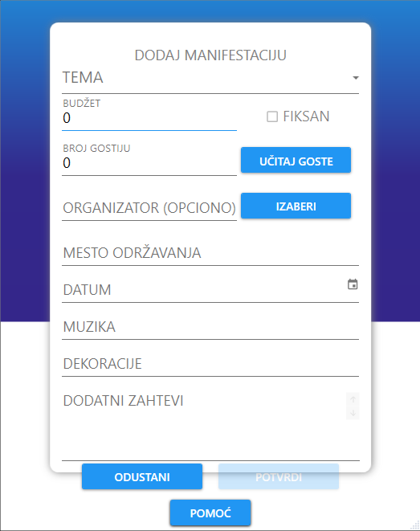
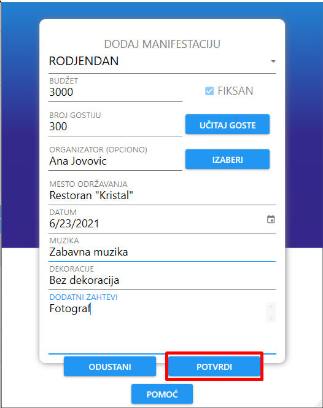
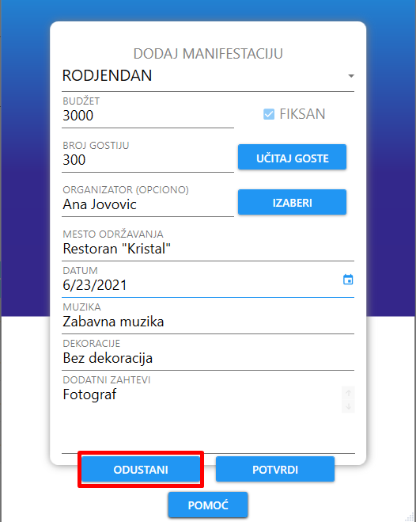

Nakon klika na dugme "Dodaj manifestaciju", korisniku se otvara novi prozor sa formom za dodavanje nove manifestacije.
Forma redom sadrži polja za temu manifestacije, budžet (pored se nalazi polje za potvrdu ukoliko je budžet fiksan), broj gostiju (pored se nalazi dugme za učitavanje gostiju ukoliko klijent već ima spreman spisak gostiju, pa će aplikacija sama da odredi broj gostiju), izbor organizatora (izbor je opcionalan), mesto održavanja manifestacije, datum održavanja, muziku, dekoraciju i dodatne zahteve.
Prilikom popunjavanja forme, klijentu se nudi mogućnost da ručno unese broj korisnika ili da klikne na dugme "Učitaj goste" koje se nalazi levo od polja za broj gostiju, pa će aplikacija sama izračunati broj gostiju.
Ukoliko se klijent opredeli za učitavanje gostiju, nakon pritiska dugmeta "UČITAJ GOSTE", on mora da izabere odgovarajuću .txt ili .csv datoteku koja sadrži redove imena i prezimena svih gostiju odvojena zarezom (",").
Ukoliko se klijent opredeli za izbor organizatora, nakon pritiska dugmeta "IZABERI", njemu se prikazuje tabela svih organizatora i klijent može da izabere organizatora.
Nakon što korisnik popuni sva obavezna polja forme, on može da doda manifestaciju klikom na dugme "POTVRDI".
Ukoliko je klijent odustao od dodavanja manifestacije, klikom na dugme "ODUSTANI" prekida se proces dodavanja manifestacije i prozor se zatvara.
